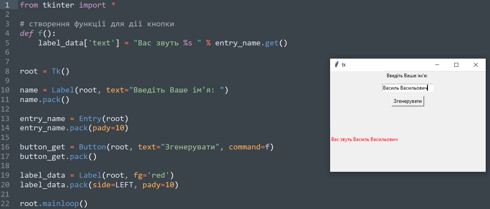

Віджет(елемент керування) — стандартизований компонент графічного інтерфейсу,
з яким взаємодіє користувач.
Основні елементи керування Tkinter:
Label
Frame
Button
Text and Scrollbar
Entry
Radiobutton
Chechbutton
Scale
Listbox
Canvas
Manu
Віджети Button та Label ми вже розглянули у попередніх темах.
Віджет Frame – клас фрейму (рамки). Цей віджет призначений для організації віджетів всередині вікна.
Віджет Entry – клас однорядкового текстового поля.
Створити вікно, яке міститиме такі компоненти: мітку з текстом "Введіть ваше ім'я", пусте однорядкове текстове поле, кнопку з надписом "Згенерувати" та пусту мітку в кінці. Визначити дію кнопки: після натиснення на кнопку в пусту мітку записується текст "Вас звуть ...", де на місці крапок — текст, введений у текстове поле.
Віджет Radiobutton – клас перемикачів (радіокнопок).
Віджет Checkbutton – клас прапорців. Цей віджет потрібен користувачам для вибору кількох елементів у вікні, що відрізняє його від перемикача, де користувач може зробити лише один вибір. Прапорець має два стани: увімкнено або вимкнено
Menu – клас головного меню.
Меню – це віджет, який присутній у багатьох користувацьких додатках.
У меню представлені всі команди та функції програми, які доступні користувачеві через графічний інтерфейс. Знаходиться воно під рядком заголовка. Меню складається з випадаючих списків, що розміщені під словами-пунктами меню. Пункти цих випадаючих списків є командами і зазвичай виконують якісь дії (відкрити, зберегти, вийти і т.д.).
Віджет Text – клас багаторядкового текстового поля.
Scrollbar – клас смуги прокручування (скроллер). Використовується для переміщення по тексту, що не вміщується у відведеному для нього місці екрану.